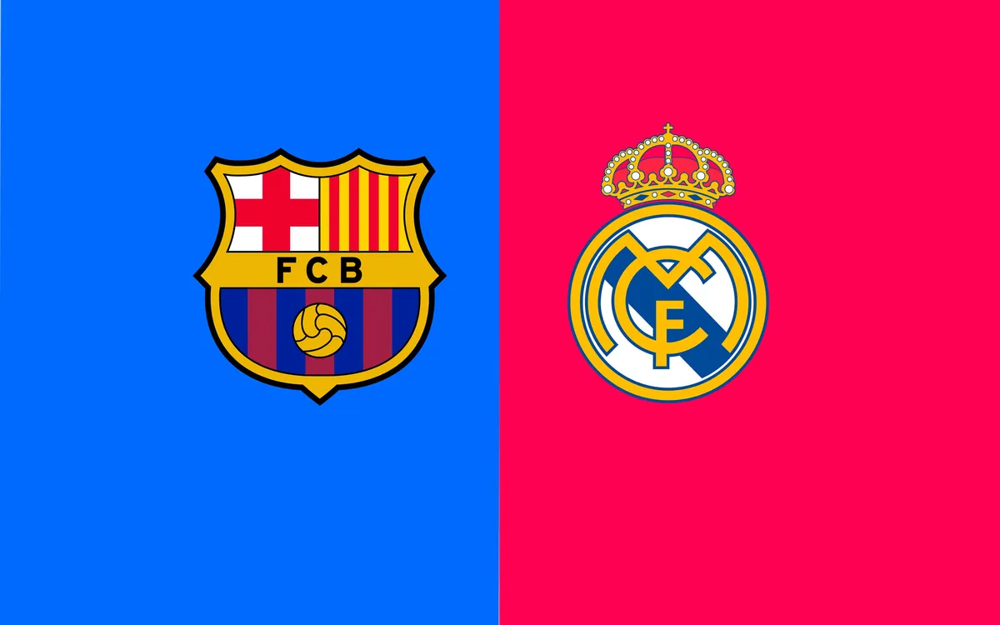
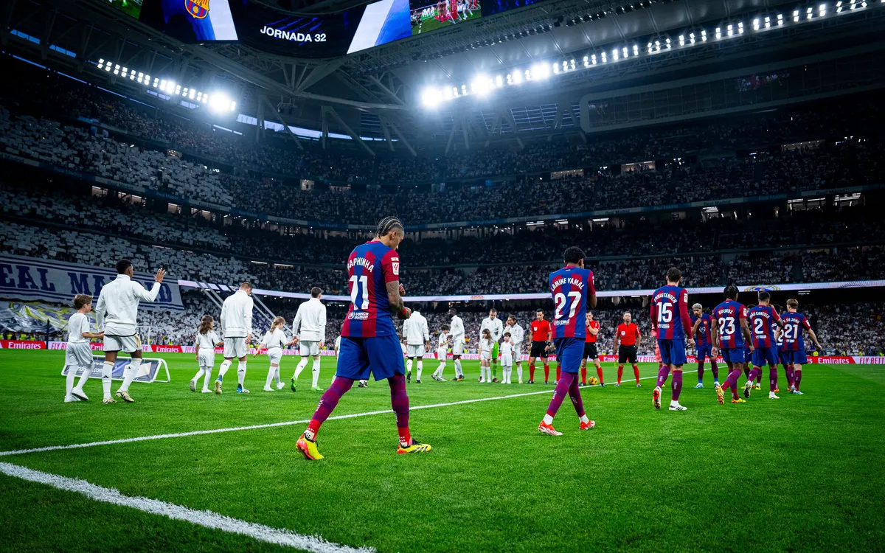
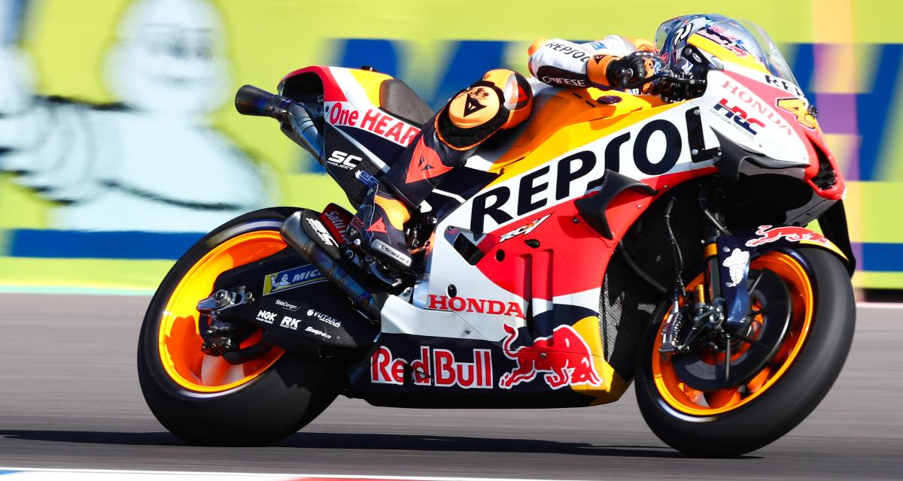
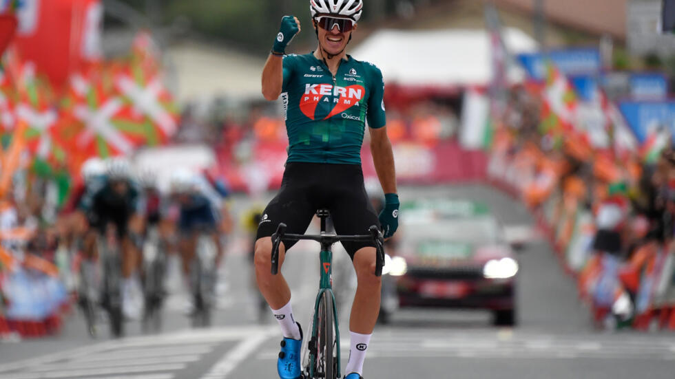
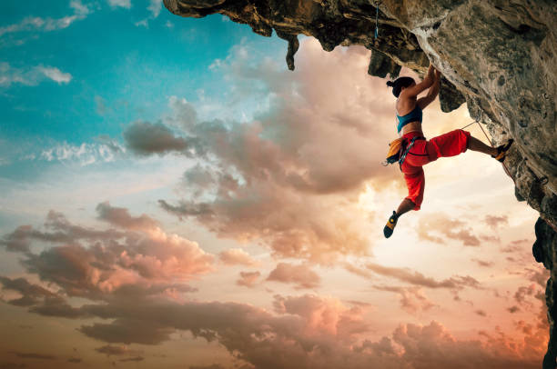
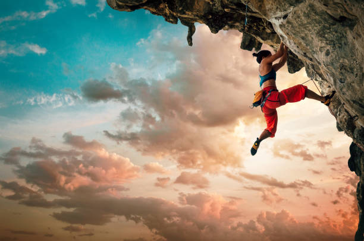

Culture envers le sport
Le sport est une partie intégrante de la culture espagnole. Le football est de loin le sport le plus populaire, et des clubs comme le Real Madrid et le FC Barcelone sont mondialement reconnus. Les matches de football sont suivis avec une passion intense par les fans, et les derbys entre ces deux clubs sont des événements majeurs. Outre le football, l’Espagne est également une puissance dans d’autres sports comme le tennis, avec des figures telles que Rafael Nadal, et le basket-ball avec des équipes nationales et des joueurs évoluant dans la NBA. L’Espagne excelle aussi en moto GP et en cyclisme, ce qui montre l’ampleur de la diversité sportive dans le pays.
Le Football : Une Passion Nationale
Le football est profondément enraciné dans la culture espagnole et rassemble des millions de fans. Les clubs légendaires comme le Real Madrid et le FC Barcelone sont reconnus à l’échelle mondiale, et leurs derbys sont des événements qui captivent toute la nation. L’ambiance dans les stades est électrique, et les supporters s’unissent pour célébrer ou défendre leurs couleurs avec ferveur.
 Le Tennis : Des Champions Mondiaux
L’Espagne est également renommée pour ses performances en tennis, avec Rafael Nadal comme figure emblématique. Ce champion a marqué l’histoire du sport en remportant de nombreux titres du Grand Chelem, et il incarne le talent espagnol à l’international. Le pays forme régulièrement des athlètes qui excellent dans ce domaine.

Le Basket-ball : Une Force Européenne et Internationale
Les équipes espagnoles de basket-ball, tant masculines que féminines, se distinguent sur la scène internationale. La ligue espagnole est parmi les plus fortes d’Europe, et de nombreux joueurs évoluent également en NBA. Ce sport gagne en popularité, et les victoires des équipes nationales renforcent la fierté espagnole.
Moto GP et Cyclisme : Une Vitesse et une Endurance Remarquables
L’Espagne brille dans les compétitions de Moto GP, avec des champions comme Marc Márquez. Le cyclisme occupe aussi une place importante, avec des courses telles que la Vuelta a España, qui est l'un des événements les plus prestigieux au monde. Ces sports reflètent l’attrait des Espagnols pour les compétitions de vitesse et d’endurance.
 La Tauromachie : Une Tradition Controversée
Bien que controversée, la tauromachie reste un aspect symbolique de la culture sportive espagnole, surtout dans certaines régions. Considérée par certains comme un art et par d’autres comme un sport, elle divise les opinions mais reste inscrite dans l’histoire culturelle de l’Espagne.
Les Sports d'Aventure et Aquatiques
Les côtes espagnoles attirent les amateurs de sports nautiques, comme le surf, la voile et la plongée sous-marine. Les montagnes offrent également de belles opportunités pour les sports d’aventure, tels que l’escalade et le ski. Ces activités montrent la diversité géographique de l'Espagne et le goût des Espagnols pour les sports de plein air.
 
